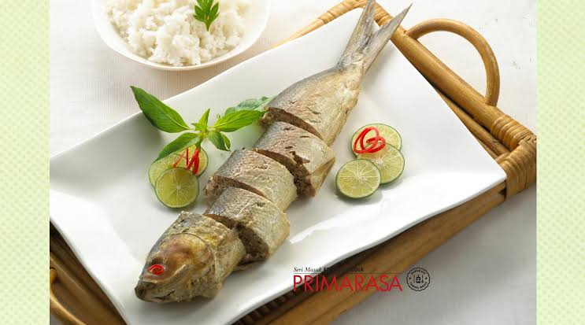

Lontong Kupang
Lontong kupang biasa disajikan dengan sate kerang dan minum air dengan disajikan bersama tempurung degan atau dengan gelas es degan.
Baca selengkapnya >>>>>

Lontong Balap
Makanan ini terdiri dari lontong, taoge, tahu goreng, lentho, bawang goreng, kecap, dan sambal.
Baca selengkapnya >>>>>

Bandeng Asap
Bandeng asapmerupakan olahan dari ikan bandeng segar yang dimatangkan dengan cara pengasapan
Baca selengkapnya >>>>>

Sate Kerang
Sate kerang dibuat dari daging kerang. Sate ini biasanya disajikan bersama dengan Lontong Kupang, lontong balap, kecap dan sambal.
Baca selengkapnya >>>>>

Kerupuk Udang
Kerupuk udang adalah kerupuk yang terbuat dari adonan tepung tapioka dan udang yang ditumbuk halus yang diberi bumbu rempah dan penambah rasa.
Baca selengkapnya >>>>>

Otak - Otak Bandeng
Otak-otak bandeng memiliki rasa gurih, manis, serta kaya rempah. Makanan ini juga sangat cocok dijadikan buah tangan untuk keluarga dan sahabat.
Baca selengkapnya >>>>>